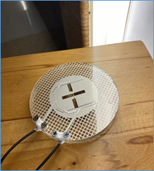
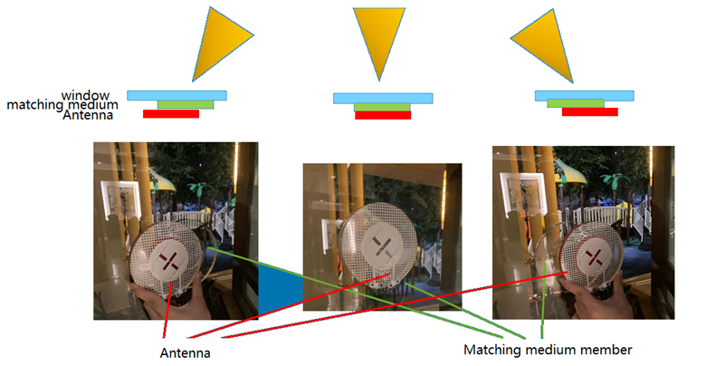

Glassdio Scientific Limited
Glassdio Scientific Limited-
Innovation
New concepts and methods
New products and technologies -
Convenience
World wide connection
Lifestyle changes -
Outstanding
Better performance in the industry

Glassdio 5G direction-tunable window external antenna
Existing 5G Problem: Mid-band 5G (3.3–4.2 GHz) has higher path and penetration loss. Windows are the least-loss entry path but still add several dB, depending on glazing and angle of incidence. Typical indoor CPEs placed away from the window add ~2–5 dB of indoor path/multipath loss and cannot control angle of arrival, leaving SINR suboptimal. Many competing window-mount externals are large, opaque, wide-beam (~3–4 dBi) and lack steering, blocking light and underperforming at oblique angles.
Product solution: A transparent, low-profile, manual beam-steering window antenna that adheres directly to glass. Users adjust azimuth/elevation toward the serving cell or a cleaner reflected path to maximize SINR. The EM-wave is optimized for through-glass coupling, reducing reflection/absorption at mid-band. A description of antenna installation for radiation angle tuning
Evidence and comparison: RSRP improvement up to +9–10 dB versus users’ initial indoor CPE placement after on-glass mounting and beam tuning.
Compared with alternatives:
- Indoor-only CPE antennas: by attaching on-glass and steering the beam, our solution avoids an extra ~2–5 dB of room loss and ~1–2 dB of orientation penalties, and adds directional gain, yielding up to ~9–10 dB improvement in practice.
- Fixed opaque panels: provide some gain but no steering; misalignment to the through-glass path causes extra reflection loss and lower SINR, typically yielding only ~3–4 dB effective improvement. In many low-gain scenarios, our Product (2) can already replace these.
- Outdoor high-gain directional antennas (~10 dBi): require long cables (feed loss), weatherproof mounting hardware, drilling/cable passthroughs, and professional installation. Realized net gain often only ~6–10 dB after cable losses, with higher cost, time, and weather exposure risk.
- Indoor high-gain directional antennas (~10 dBi): incur at least ~3 dB window attenuation at typical angles and are limited to a narrow pointing range (±30°). If made less bulky, actual gain is lower; walls add further attenuation.
Key features:
- Transparency and form factor: ~70% of the area is highly transparent; low, flat profile preserves daylight and aesthetics.
- Manual beam steering: ±45° azimuth/elevation range for efficient cell/reflection finding; on-mount scale/marks enable repeatable alignment.
- Through-glass coupling: high-permittivity, low-loss materials recover ~3–4 dB otherwise lost to glazing at common incidence angles (20°–60°).
- Installation: adheres directly to glass; tool-free setup; short, low-loss pigtail minimizes feed loss.
- Compliance/usability: no drilling or exterior fixtures; renter-friendly and suitable where external mounts are restricted.
Note: Specifications and data may be modified based on the development process
